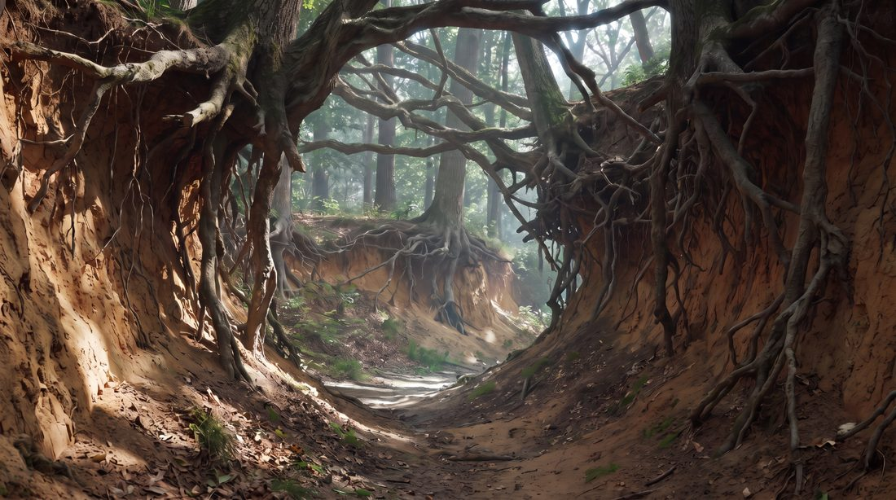

MOTION / TRAVERSAL EXPERIMENTS
Can independently generated canonical frames become one continuous physical journey?
The still-image sequence was frozen before motion testing. The video experiments then treated selected stills as spatial anchors and asked a video model to infer the unseen traversal between them. The key distinction was not visual smoothness, but whether the camera appeared to move through a stable world instead of morphing, dissolving, or cutting from one endpoint to the next.
Still-image generation
Model: Nano Banana Pro
Platform: Runway
Format: 16:9 · 2752 × 1536
Video traversal
Model: Seedance 2.5
Platform: Krea
Baseline: 720p · 6 seconds · first/last frame only · no @ references
Test 00 · A → alternate exterior endpoint
INFORMATIVE ACCIDENT
Seedance 2.5 via Krea · 720p · 6s · baseline prompt
The wrong exterior frame was accidentally used as the endpoint. The result nevertheless produced convincing physical traversal from the cave into an exterior environment. Because the endpoint was not canonical B, this clip is excluded from canonical sequence evaluation, but it established that the method could work at all.
Test 01 · Canonical A → B
PASS
Seedance 2.5 via Krea · 720p · 6s · first frame A · last frame B · no additional references
First-person camera walks steadily forward through the environment, physically traveling from the starting location to the ending location. The camera moves forward through the tunnel, passes completely through the opening into daylight, and continues forward across the exterior terrain until naturally arriving at the ending viewpoint. Continuous physical camera movement through space at a natural walking pace. Preserve the spatial structure of the environment during the traversal rather than transforming or dissolving one location into another.
Seedance physically approached the cave opening, crossed the threshold, revealed the exterior geography, and arrived convincingly at B. This was the strongest evidence that a video model could infer unseen connective space between two independently generated stills.
Important imperfection: after exiting the cave, the terrain implies a step down, but the camera remains at a nearly fixed vertical height. The result feels more like a stabilized drone or camera rail than an embodied person walking. Spatial continuity passed; terrain-responsive body motion was only partial.
Test 02 · B → C baseline
FAIL
Seedance 2.5 via Krea · 720p · 6s · baseline approach
The clip remained visually smooth, but the world reorganized around the camera. Roots and earthen banks gradually reconciled into the destination instead of being passed in stable world space. Optical forward motion was present, but the dominant mechanism was a slow morph/dissolve rather than physical traversal.
Test 03 · B → C with explicit anti-morph constraints
FAIL
Seedance 2.5 via Krea · 720p · 6s · prompt changed, endpoints unchanged
First-person camera physically walks forward through the existing ravine from the starting viewpoint to the ending viewpoint. Environmental structures remain fixed in world space as the camera passes them: trees, exposed roots, earthen banks, and terrain must not transform, grow, dissolve, or rearrange to become the ending scene. Foreground objects move past the camera and behind it through natural parallax while newly revealed terrain appears ahead. Continuous forward locomotion through one stable physical environment, naturally arriving at the ending viewpoint. No morphing, dissolving, crossfading, or transformation of the environment.
No embedded clip was retained for this attempt. The observed failure changed from a gradual morph to an abrupt hard cut: stronger language suppressed the dissolve behavior without producing the missing physical route. Prompting harder did not solve the geometry problem.
Test 04 · B → X₁ waypoint · 6s
FAIL
Seedance 2.5 via Krea · 720p · 6s · intermediate endpoint generated from B + C references

X₁ was generated with Nano Banana Pro using B and C as references, explicitly asking for a plausible intermediate camera position between the two. It is a traversal waypoint, not a canonical story frame.
First-person camera walks steadily forward through the environment, physically traveling from the starting location to the ending location. The camera moves continuously forward along the existing terrain until naturally arriving at the ending viewpoint. Continuous physical camera movement through space at a natural walking pace. Preserve the spatial structure of the environment during the traversal rather than transforming or dissolving one location into another.
The shorter spatial jump still did not induce genuine locomotion. Seedance largely held the camera position and slowly reconciled B into X₁, suggesting that waypoint insertion alone was not sufficient.
Test 05 · B → X₁ waypoint · 4s
FAIL
Same B and X₁ frames · same prompt · only duration changed from 6s to 4s
Reducing duration did not materially rescue the traversal. This controlled test weakened the hypothesis that the 6-second duration was simply too long for the apparent distance between B and X₁.
Test 06 · F → G threshold replication
FAIL
Seedance 2.5 via Krea · 720p · 6s · first frame F · last frame G · no additional references
First-person camera walks steadily forward through the environment, physically traveling from the starting location to the ending location. The camera moves forward through the dark root opening, passes completely through the threshold, and continues forward into the newly revealed environment until naturally arriving at the ending viewpoint. Continuous physical camera movement through space at a natural walking pace. Preserve the spatial structure of the environment during the traversal rather than transforming or dissolving one location into another.
This test deliberately asked whether the strong A → B result would generalize to another threshold-like transition later in the journey. It did not. The clip remained visually coherent, but the camera made little meaningful forward progress; the root, ledge, and mushroom structures reconciled toward G around the viewpoint instead of being physically traversed.
Interpretation: a narrative threshold is not enough. The endpoint images themselves must contain compatible spatial evidence that allows the video model to infer a route through a stable environment.
Test 07 · B → D · skip the weak intermediate frame
FAIL
Seedance 2.5 via Krea · 720p · 6s · first/last frame only · generalized baseline prompt
First-person camera walks steadily forward through the environment, physically traveling from the starting location to the ending location. The camera moves continuously forward along the existing terrain until naturally arriving at the ending viewpoint. Continuous physical camera movement through space at a natural walking pace. Preserve the spatial structure of the environment during the traversal rather than transforming or dissolving one location into another.
Why we tried it: The reel suggested B → C barely encoded camera movement. Skipping C created a larger visual jump and tested whether a more clearly different endpoint would encourage actual traversal.
Result: It still favored dissolve/reconciliation over locomotion. A larger endpoint difference alone was not enough. One earlier attempt at this same test was invalidated by Seedance-generated audio triggering a copyright check; that run was excluded from the visual traversal evaluation.
Test 08 · B → D · Terran-derived continuous-motion strategy
PASS
Seedance 2.5 via Krea · same B/D anchors · 720p · 6s · first/last frame only
First person POV camera continuously moving forward through a spatially-contiguous environment at a constant, fast speed, traveling deeper through the earthen ravine in uninterrupted forward motion, turning corners or passing beneath roots or around earthen banks or through vegetation, dust, fog, mist, or foreground objects if necessary to continue moving forward. The camera never stops advancing through the environment. Nearby roots, trees, rocks, and terrain pass beside the camera and move behind it as new terrain is continuously revealed ahead. Leaves, dust, and loose particles move naturally through the air as the camera passes. No music, no soundtrack, no dialogue.
Controlled comparison: The anchors were unchanged from Test 07. Only the prompting philosophy changed.
Result: Dramatically stronger physical travel. Foreground trunks and roots sweep past the camera, occlusions happen naturally, new terrain is continuously revealed, and strong parallax makes the shot read as movement through a space rather than B dissolving into D.
Important detail: Large foreground roots and trunks function almost like natural wipes. They give the model opportunities to reconstruct unseen geometry while preserving the viewer's perception of uninterrupted travel. Incidental motion such as the falling leaf adds temporal texture and additional optical-flow evidence without being the core reason the transition succeeds.
Remaining limitation: The traversal succeeds perceptually, but the clip still eases in at the beginning and eases out at the end. That is acceptable for a single shot, but repeated easing would expose every clip boundary in a longer stitched journey.
Terran's motion-conditioned anchor technique
In an August 29 check-in, Terran Boylan explained an important part of his original TunnelVision workflow, later used in Digging in the Dirt, that had not yet been represented in this log: before video generation, he preprocessed the keyframes in Photoshop so they visually communicated that the camera was already moving. His script used two different blur operations, incorporated Z/depth information, and protected the intended destination area from blur.
The practical effect is a depth-aware motion cue: nearby structures can streak strongly while the destination remains comparatively stable. This means the original technique combined linguistic motion conditioning in the prompt with visual motion conditioning in the endpoint frames.
Credit boundary: motion-conditioned keyframes, depth-aware blur, destination protection, and the generic continuous-motion prompting strategy come from Terran's original TunnelVision work. The experiments below test extensions of that approach inside the emerging agent architecture.
Test 09 · Terran library anchors + pristine start reference
PASS
Seedance 2.5 via Krea · motion-conditioned first/last frames · one pristine start-frame @ reference
First person POV camera continuously moving forward through a spatially-contiguous environment at a constant, fast speed, traveling deeper through the earthen ravine in uninterrupted forward motion, turning corners or passing beneath roots or around earthen banks or through vegetation, dust, fog, mist, or foreground objects if necessary to continue moving forward. The camera never stops advancing through the environment. Nearby roots, trees, rocks, and terrain pass beside the camera and move behind it as new terrain is continuously revealed ahead. Leaves, dust, and loose particles move naturally through the air as the camera passes. Use @img-1 as visual references for the underlying environment, geometry, materials, and fine detail while following the motion established by the first and last frames.
Result: Convincing physical traversal from the old library through the doorway into the courtyard. Shelves, skeletons, and foreground structures pass the camera with strong parallax; the doorway functions as a real threshold; and the exterior is revealed after crossing it rather than dissolving into place.
Accidental control: The prompt still contained the earthen-ravine language from the previous forest experiment. Despite the semantic mismatch, the visual anchors dominated and the traversal remained strong. This suggests that the motion-conditioned endpoints and continuous-locomotion grammar are doing substantially more work than elaborate scene-specific prose.
New extension under test: Terran did not use pristine canonical images as additional references in his original TunnelVision workflow. Here, the pristine library frame was supplied as a visual reference while the motion-conditioned first/last frames remained the motion authority.
Test 10 · Same library shot + scene-aware locomotion prompt
SIMILAR RESULT
Same motion-conditioned anchors and pristine start reference · scene-specific language substituted for the accidental ravine language
First person POV camera continuously moving forward through a spatially-contiguous environment at a constant, fast speed, traveling forward through the old library toward the doorway and passing completely through it into the courtyard beyond in uninterrupted forward motion. The camera passes between bookshelves, skeletal figures, furniture, architectural structures, or foreground objects as necessary to continue moving forward. The camera never stops advancing through the environment. Nearby shelves, skeletons, furniture, door frames, and other foreground objects pass beside the camera and move behind it through strong natural parallax as new space is continuously revealed ahead. The camera physically crosses the doorway threshold and continues moving forward into the newly revealed courtyard. Dust, loose particles, and occasional translucent ghostly forms drift naturally through the air and pass around the moving camera, reinforcing its forward motion. Use @img-1, the pristine visual reference for the starting library environment, to preserve its geometry, materials, lighting, and fine detail while following the motion established by the first and last frames.
Result: Also strong, but not dramatically better than Test 09. The scene-aware language correctly describes the library, doorway, skeletons, courtyard, parallax, and ghostly atmospheric motion, yet the overall traversal behavior is broadly similar.
Interpretation: The Cinematographer probably should not ask an LLM to freely rewrite the whole video prompt for every shot. A stable, proven locomotion template can be filled from structured scene data: environment, route, destination, foreground occluders, atmospheric motion, speed, and slight steering. The more valuable reasoning effort may be geometric: where to go, what to protect, what should pass the camera, and how to condition the anchors.
At this stage, we hypothesized that canonical truth and motion-conditioned anchors can be separate assets
After Tests 09–10 we distinguished a pristine canonical frame from a derived motion-conditioned frame. At this stage we treated the canonical image as authoritative world state, and hypothesized that pristine originals might also be supplied to the video model as visual/reference authority for geometry, materials, lighting, and fine detail, while the conditioned frames remained the motion authority.
We noted that a controlled test should compare clean S/E, motion-conditioned S/E, and motion-conditioned S/E plus pristine references. The library experiment at this stage had only the pristine start frame available. Later controls, recorded in the Camotion checkpoint below, changed this: extra pristine references are not current architecture, and they did not explain the recursive-library artifact.
Motion chapter takeaway
Visual continuity is not spatial traversability, and endpoint matching is not the same objective as locomotion. Our destination-oriented prompts repeatedly encouraged Seedance to reconcile one frame into another. The successful B → D controlled test used the same anchors but changed the instruction hierarchy: continuous movement became the governing fact of the shot, while the environment was allowed to negotiate bends, occlusions, particles, and foreground objects in service of uninterrupted travel.
This confirms the value of Terran Boylan's original TunnelVision motion language rather than replacing it. The new opportunity is to generalize that principle inside a Cinematographer agent: inspect the current world, infer appropriate route-taking, occluders, particles, moving objects, and motion cues for that environment, then construct a world-specific traversal prompt whose first priority is never stop moving.
At this stage we treated shared canonical anchors as the ideal edit points
For adjacent clips A → B and B → C, we treated the strongest compositing case as the final frame of the first clip and the first frame of the second clip being the exact same canonical image B. Trimming away eased clip ends can remove the speed ramp, but it also sacrifices that exact shared visual handoff. The later Camotion checkpoint keeps canonical B as storyboard/world-state identity, while video currently receives shooting frames derived from those canonical images.
The better target is therefore through-motion at the anchor: arrive at B while still moving, and depart from B already moving. B should behave like a position keyframe sampled from the middle of a continuous motion curve, not a place where the camera comes to rest.
This gives the Cinematographer another responsibility: preserve anchor identity while maintaining non-zero perceived velocity through clip boundaries.